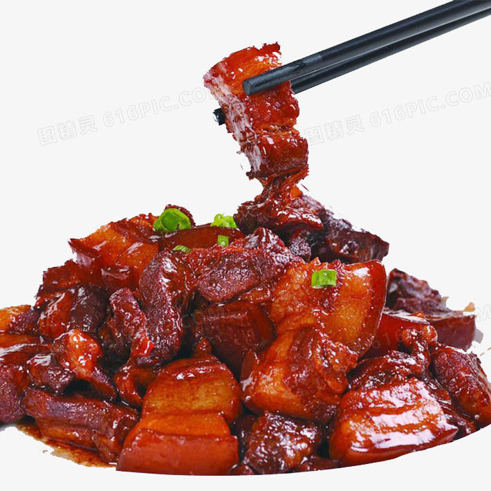

张怡 通信工程1903 201916130203
前一个 韦婷婷 201916130206
后一个 方传苏201916130201
我就是我不一样的烟火
我喜欢的美食
红烧肉

来历
- 故事一据传苏东坡在杭州做官时，组织民工在西湖筑了一道堤，为老百姓做了一件好事。为了感谢苏东坡，那年过春节，城里男女老少抬猪担酒来给他拜年。盛情难却，苏东坡便收下了猪肉。
后来，他叫人将猪肉切成方块，烧得红酥酥的，然后按民工的花名册，挨家挨户把肉分送给他们过年。老百姓看到苏东坡不忘民工，越发爱戴他，把他送来的肉叫“东坡肉”（红烧肉）。吃起东坡肉来更觉味道鲜美。
做法
1、五花肉800克、八角15克、香叶1片、葱段50克、姜片30克、白砂糖20克、盐适量、酱油25克、黄酒30克、冰糖25克、花生油15克。先把五花肉切成2.5厘米见方的块儿。用凉水下锅。
2、捞出，控净水份备用，炒锅上火倒入少许油，煸香八角。倒入细砂糖，煸炒糖色到微黄色即可。
3、开始出油后烹入黄酒，倒入酱油翻炒，红烧肉的做法，炒到黄酒挥发，酱油均匀的吸附在肉块上为止， 把肉炒匀后，往锅中注入开水，水和肉块持平即可。然后，放入葱段、姜片、香叶。
4、最后放入冰糖，红烧肉的做法， 盖上锅盖用小火焖煮30-40分钟，肉焖熟后，捡出葱、姜、八角、香叶不要，放少许盐，然后用旺火收汁。
5、汤汁收净便可出锅，在收汁的时候，可顺便把多余的油滗出留作它用，此油味道很香，可炒菜还可做其它用途。